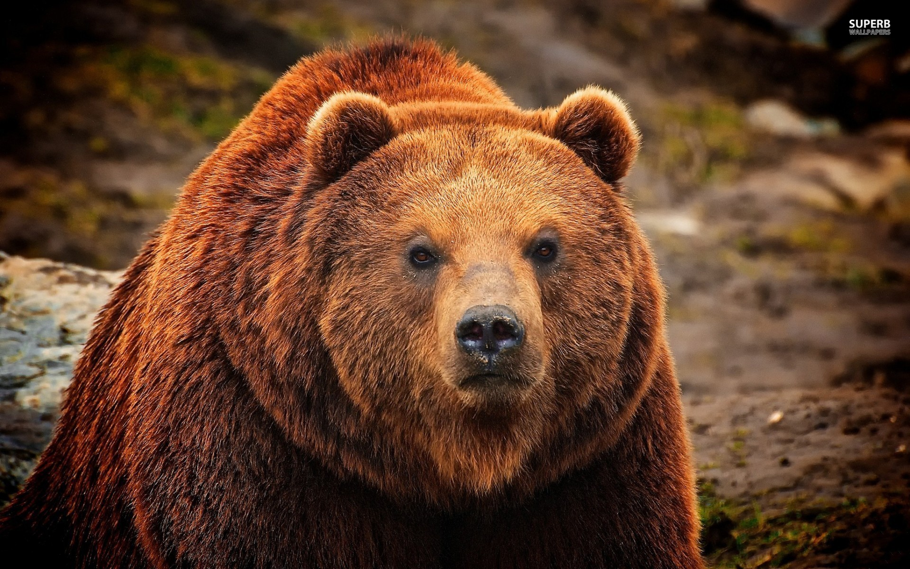

Grizzly Bear
The grizzly bear (Ursus arctos horribilis), also known as the North American brown bear or simply grizzly
- In addition to the mainland grizzly (Ursus arctos horribilis), other morphological forms of brown bear in North America are sometimes identified as grizzly bears. - These include three living populations—the Kodiak bear (U. a. middendorffi), the Kamchatka bear (U. a. beringianus), and the peninsular grizzly (U. a. gyas)—as well as the extinct California grizzly (U. a. californicus†) and Mexican grizzly (formerly U. a. nelsoni†).- Brown bears originated in Eurasia, and first migrated to North America between 177,000 BP ~ 111,000 BP. Most grizzly bears belong to this initial population of North American brown bear, which continues to be the dominant mitochondrial grouping south of subarctic North America. -
- A pronounced muscular hump appears on adult grizzlies' shoulders; black bears do not have this hump. - Aside from the distinguishing hump a grizzly bear can be identified by a "dished in" profile of their face with short, rounded ears, whereas a black bear has a straight face profile and longer ears. - A grizzly bear can also be identified by its rump, which is lower than its shoulders; a black bear's rump is higher than its shoulders.
WHERE TO FIND THEM?
You will find the Grizzlies next to the Giraffe and Monkey, before to the Warthong.